CarX is an autonomous rover that roams around rooms, mapping the Wi-Fi signal strengths as a height map, and pinpointing the source of the Wi-Fi signals.
It uses several components to perform its task, namely:
Investment: ₹3,000 💀🙏
Chip: ESP32-D0WD-V3 (revision 3.1)
Module: ESP32-WROOM-32E
Board: NodeMCU-32S ESP-32S v1.1
Note: Mislabeled CMD as GND on silkscreen
| 1 | 2 | 3 | 4 | 5 | 6 | 7 | 8 | 9 | 10 | 11 | 12 | 13 | 14 | 15 | 16 | 17 | 18 | 19 |
| 5V | CMD | SD3 | SD2 | P13 | GND | P12 | P14 | P27 | P26 | P25 | P33 | P32 | P35 | P34 | SVN | SVP | EN | 3V3 |
| CLK | SD0 | SD1 | P15 | P2 | P0 | P4 | P16 | P17 | P5 | P18 | P19 | GND | P21 | RX | TX | P22 | P23 | GND |
| 1 | 2 | 3 | 4 | 5 | 6 | 7 | 8 | 9 | 10 | 11 | 12 | 13 | 14 | 15 | 16 | 17 | 18 | 19 |
| Pin | Label | GPIO | Category | Features | Notes | Usage |
|---|---|---|---|---|---|---|
| 1 | 5V | — | Power | — | 5V supply | ✕ |
| 2 | CMD | 11 | Special | SPI flash — CMD/CSC | Avoid using as GPIO | ✕ |
| 3 | SD3 | 10 | Special | SPI flash — SD3 | Avoid using as GPIO | ✕ |
| 4 | SD2 | 9 | Special | SPI flash — SD2 | Avoid using as GPIO | ✕ |
| 5 | P13 | 13 | General | ADC2-4, Touch4, HSPI_MOSI, RTC_GPIO14 | — | Proximity Trigger Right |
| 6 | GND | — | Power | — | Ground | ✕ |
| 7 | P12 | 12 | Strapping | ADC2-5, Touch5, HSPI_MISO (MTDI), RTC_GPIO15 | Must read LOW at boot | Motor Battery Status (Blue) |
| 8 | P14 | 14 | General | ADC2-6, Touch6, HSPI_CLK, RTC_GPIO16 | — | Speed Encoder Right |
| 9 | P27 | 27 | General | ADC2-7, Touch7, RTC_GPIO17 | — | Speed Encoder Left |
| 10 | P26 | 26 | General | ADC2-9, DAC2, RTC_GPIO7 | — | Motor Right Forward |
| 11 | P25 | 25 | General | ADC2-8, DAC1, RTC_GPIO6 | — | Motor Right Reverse |
| 12 | P33 | 33 | General | ADC1-5, Touch8, RTC_GPIO8 | — | Motor Left Reverse |
| 13 | P32 | 32 | General | ADC1-4, Touch9, RTC_GPIO9 | — | Motor Left Forward |
| 14 | P35 | 35 | Input | ADC1-7, RTC_GPIO5 | No pull-up/down | Main Battery Voltage |
| 15 | P34 | 34 | Input | ADC1-6, RTC_GPIO4 | No pull-up/down | Motor Battery Voltage |
| 16 | SVN | 39 | Input | ADC1-3, RTC_GPIO3 | No pull-up/down | Primary button |
| 17 | SVP | 36 | Input | ADC1-0, RTC_GPIO0 | No pull-up/down | Secondary button |
| 18 | EN | — | Power | — | Chip enable | ✕ |
| 19 | 3V3 | — | Power | — | 3.3V regulated output | ✕ |
| 1 | CLK | 6 | Special | SPI flash clock | Avoid using as GPIO | ✕ |
| 2 | SD0 | 7 | Special | SPI flash — SD0 | Avoid using as GPIO | ✕ |
| 3 | SD1 | 8 | Special | SPI flash — SD1 | Avoid using as GPIO | ✕ |
| 4 | P15 | 15 | Strapping | ADC2-3, Touch3, HSPI_CS0 (MTDO), RTC_GPIO13 | Must read HIGH at boot | Main Battery Status (Green) |
| 5 | P2 | 2 | Strapping | ADC2-2, Touch2, RTC_GPIO12 | Onboard LED | Heartbeat LED |
| 6 | P0 | 0 | Strapping | ADC2-1, Touch1, RTC_GPIO11 | BOOT button | Tertiary button |
| 7 | P4 | 4 | General | ADC2-0, Touch0, RTC_GPIO10 | — | Button Status LED (Red) |
| 8 | P16 | 16 | General | UART2 RX (default) | — | Proximity Trigger Left |
| 9 | P17 | 17 | General | UART2 TX (default) | — | Proximity Trigger Front |
| 10 | P5 | 5 | Strapping | VSPI_CS0 | Must read HIGH at boot | Battery Low Status (Red) |
| 11 | P18 | 18 | General | VSPI_CLK | — | Proximity Echo Right |
| 12 | P19 | 19 | General | VSPI_MISO | — | Proximity Echo Left |
| 13 | GND | — | Power | — | Ground | ✕ |
| 14 | P21 | 21 | General | I2C SDA (default) | — | I2C SDA |
| 15 | RX | 3 | Special | UART0 RX | Serial monitor / flashing | ✕ |
| 16 | TX | 1 | Special | UART0 TX | Serial monitor / flashing | ✕ |
| 17 | P22 | 22 | General | I2C SCL (default) | — | I2C SCL |
| 18 | P23 | 23 | General | VSPI_MOSI | — | Proximity Echo Front |
| 19 | GND | — | Power | — | Ground | ✕ |
The primary and secondary buttons are close to each other, while the tertiary button is grouped separately. It is also smaller.
The GSLED has RGB channels in one LED unit, with ability to control brightness of each channel programmatically.
The ISLED has only R channel programmatically configurable. Its G and B channels are physically wired to the primary and secondary buttons.
Input methods are configured by pressing the tertiary button, which toggles between Normal Method (default) and Adjustment Method.
The current index or value is displayed on GSLED by fixing the saturation and brightness, and adjusting the hue based on the index and total.
The current index or value is displayed on ISLED by adjusting the baseline brightness on R channel based on the index and total.
ISLED uses blink code to denote gesture.
On state: 100% if baseline < 38.197%, else 0%
Off state: 0% if baseline >= 38.197%, else 100%
